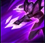

Claimed by Void Crest the Void when she was only a child, Kai'Sa managed to survive
through sheer tenacity and strength of will. Her experiences have made her a deadly hunter and, to some, the
harbinger of a future they would rather not live to see. Having entered into an uneasy symbiosis with a
living Void carapace, the time will soon come when she must decide whether to forgive those mortals who
would call her a monster, and defeat the coming darkness together... or simply to forget, as the Void
consumes the world that left her behind.
Kai'Sa is a slender, pale-skinned woman with long dark brown hair. Her robes are
composed of a Void Symbiote with a distinct palette of grey, dark grey, purple and bronze. The most
distinctive ornaments of her attire are some purple marks on her face.
ACTIVE: Kai'Sa releases a swarm of 6 missiles that evenly distributes among nearby Sight
visible enemies, each one hitting their target after 0.4 seconds and dealing physical damage. Minions
below Health 35% health take double damage
ACTIVE: Kai'Sa fires a void bolt in the target direction that grants sight around its
trajectory as it travels, dealing magic damage to the first enemy hit, applying 2 Plasma, and True Sight
revealing them for 4 seconds

ACTIVE: Kai'Sa charges up over the duration of the cast time, during which she is still
allowed to move, becomes ghosted and gains Movement speed bonus movement speed, increased by 0% - 100%
(based on bonus attack speed).
ACTIVE: Kai'Sa instantly Hybrid resistances shields herself for 2 seconds and
swiftly Dash.png dashes to a target location near a Sight visible enemy champion recently
affected by Plasma. The shield's duration refreshes once the dash ends.